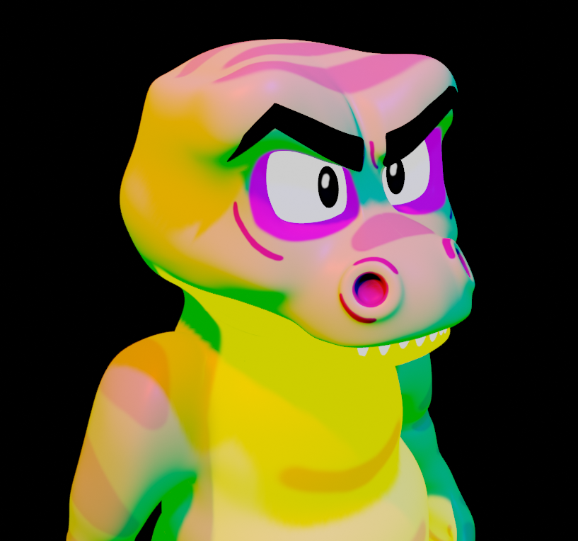

Cocodrino
Cocodrino es un modelado que nació como parte de un experimento enfocado en el uso de shaders para una serie web en desarrollo. Inspirado por el estilo visual de la película infantil Los chicos malos, el proyecto busca explorar texturas y técnicas de iluminación que den vida a personajes animados. El modelado es una pieza clave dentro de la fase piloto de la serie, sirviendo como un punto de partida para el desarrollo visual y narrativo de los personajes.
